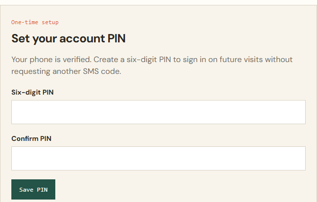
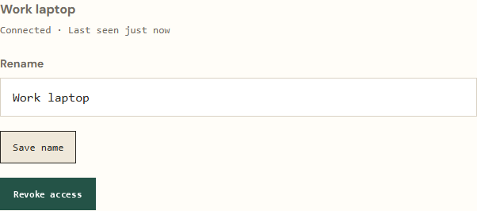

Campfire SMS
Campfire SMS
Grok Bot: hosted MCP and webhook wake
A text can trigger Grok’s cloud routine even while your PC is off. The Bot reads the message through Campfire SMS’s hosted MCP and can reply by SMS.
- Create your account and verify your phone. Then sign in, go to Add computers, open Add a computer or Bot, and choose Create install command. Run the command your account shows, adding
--credential-only. It saves the installation credential to a file and prints where. - Connect
https://api.campfiresms.com/mcpin Grok’s secure plugin or MCP settings using that installation’s credential. - Create an active webhook routine, then save its URL and key under Grok Bot 24/7 wake in your Campfire SMS account.
- Send a real text. Check the webhook run, message retrieval, and SMS reply.
The Grok Bot walkthrough covers enrollment, secure credentials, the routine instruction, and the complete test. Hosted MCP requires no Python or pip installation.
Local agents: install the connector
Use this path for Codex, Grok Build, Claude Code, Cursor, OpenCode, or another compatible MCP host running on your computer. Grok Build is Grok’s coding agent on your computer; unlike Grok Bot, it can’t be woken by a text while your PC is off. You need Windows, macOS, or Linux, Node.js 18+ with npx, and Python 3.12+. Keep the computer awake and online with the agent running. The local connector does not wake stopped sessions.
Verify your phone
Start free setup to create your account. Campfire SMS sends a verification code. Choose and confirm a six-digit account PIN; later sign-ins use your phone number and PIN.
Run your installation command
Sign in, go to Add computers, open Add a computer or Bot, give the computer a label, and choose Create install command. Your account then shows the command with your installation code. Copy it and run it on the computer where your agent runs:
Installing on Linux or a VM? Do this first.
Run setup as the same non-root user that runs the agent. Use Python 3.12+ with venv support and activate an isolated environment before running the one-time command:
python3 -m venv "$HOME/.local/share/campfire/venv" . "$HOME/.local/share/campfire/venv/bin/activate" # Now run the npx setup command from your account.Do not use
sudo pip, global/system pip, or--break-system-packages. If venv support is missing, have the VM administrator install the matching Python venv package.Set the MCP server command to the virtual environment’s absolute Python path, such as
/home/agent/.local/share/campfire/venv/bin/python -m campfire_mcp.cli serve. Future runs do not inherit shell activation.npx -y @campfiresms/setup YOUR_INSTALLATION_CODEThe command is single use and expires after 10 minutes. If it expires, create a new one.
Connect your agent
Setup stores the installation credential locally and adds Campfire SMS to each agent app it finds: Codex, Claude Code, Cursor, and Grok Build. For another compatible agent, add a local MCP server named
campfireusing the command printed by setup. Open or restart the agent.Test both directions
Send the account’s test message and reply TEST. Wait for the setup confirmation. Then ask your running agent to open a bridge, text you, retrieve a harmless reply, and respond.
Cursor
Found Campfire SMS on Cursor Directory? The easiest way to connect it is the install command below. It adds Campfire SMS to Cursor for you, with no token to copy. Setup takes about five minutes.
Check the requirements
You need Node.js 18+ and Python 3.12+ on the computer where Cursor runs. Open Cursor at least once before setup so its settings folder exists. No Python? Use the Add to Cursor button instead.
Create your install command
Start free setup, verify your phone, and choose your PIN. Then go to Add computers, open Add a computer or Bot, and choose Create install command.
Run it
Paste the command into a terminal. Cursor’s own terminal works (Terminal → New Terminal). Setup adds a server named
campfireto Cursor’s global settings file,~/.cursor/mcp.json, and keeps your other servers. When it finishes, Cursor should be in its list of connected apps.npx -y @campfiresms/setup YOUR_INSTALLATION_CODEAlready set up Campfire SMS on this computer for another agent? Run
npx -y @campfiresms/setup@latest updateinstead. It adds Cursor without a new code.Restart Cursor and check the server
Quit Cursor completely and reopen it. Open Cursor Settings (Ctrl+, on Windows and Linux, Cmd+, on Mac), go to the MCP section (named Tools & MCP in many versions), and make sure
campfireis on with a green dot. If you clicked Add to Cursor on Cursor Directory earlier, you’ll also see a second Campfire SMS server with an error. Turn that one off. Thecampfireserver from the install command does the same job without a token.Test it
Send the account’s test message and reply TEST. Then ask Cursor’s agent: “Use Campfire to text me ‘Hello from Cursor. Reply with any word.’ Then check for my reply.” Reply to the text. The agent reads your reply the next time it checks Campfire.
No Python? Use the Add to Cursor button.
The Add to Cursor button on Cursor Directory connects Cursor to the hosted server at https://api.campfiresms.com/mcp. It needs no Python, but it reads your installation credential from an environment variable named CAMPFIRE_TOKEN, so set that up first.
- Create an install command as above and run it with
--credential-onlyadded at the end. Setup saves the credential and prints the file’s location:%LOCALAPPDATA%\Campfire\config.jsonon Windows, or~/.config/campfire/config.jsonon macOS and Linux. - Open that file and copy the
credentialvalue, which starts withcfi_. Treat it like a password. Never paste it into a chat, an issue, or a repo. - Save it as an environment variable named
CAMPFIRE_TOKEN. On Windows, run this in PowerShell:
On macOS or Linux, add this line to[Environment]::SetEnvironmentVariable("CAMPFIRE_TOKEN", "PASTE_CREDENTIAL_HERE", "User")~/.zshrcor~/.bashrc:export CAMPFIRE_TOKEN="PASTE_CREDENTIAL_HERE" - Quit Cursor completely and reopen it so it picks up the variable. Then click Add to Cursor on the Cursor Directory listing and confirm the install in Cursor.
- Check that the new Campfire SMS server has a green dot in Cursor’s MCP settings. Then test it as above.
Prefer to add it by hand? Put this in ~/.cursor/mcp.json. If the file already lists servers, add the campfire entry inside its existing mcpServers.
{
"mcpServers": {
"campfire": {
"url": "https://api.campfiresms.com/mcp",
"headers": { "Authorization": "Bearer ${env:CAMPFIRE_TOKEN}" }
}
}
}For client-specific steps, use Codex SMS setup or Claude Code SMS setup. Use the local-agent notifications guide to choose when the agent should text, or the away-from-desk guide to prepare a task.
Account verification and installations
These screenshots show the account interface with fictional sample data.


Update or recover a local connection
If an installation command has expired or was already used, sign in and create a new one. If your saved credential is valid, refresh the local connector with:
npx -y @campfiresms/setup@latest updateIf the credential was revoked or is missing, create a new installation instead. Restart the agent and test the message round trip. Check your account’s message balance if delivery still fails.
Revoke an installation
Sign in, find the installation under Add computers, and open Manage installation. Use Save name to identify it or Revoke access to disable its credential. For Grok Bot, disable wake and pause its routine first.
Remove a local connector
After revoking the installation, remove the MCP entry from each CLI you use:
codex mcp remove campfire
grok mcp remove campfire
claude mcp remove campfire --scope userFor Cursor, delete the campfire entry from ~/.cursor/mcp.json, or turn it off in Cursor’s MCP settings.
For OpenCode, delete the campfire entry from the mcp section of your OpenCode config (usually ~/.config/opencode/opencode.json, or opencode.json in your project). For any other MCP host, remove the campfire server in its MCP settings.
See pricing and message counting for plan and credit options.